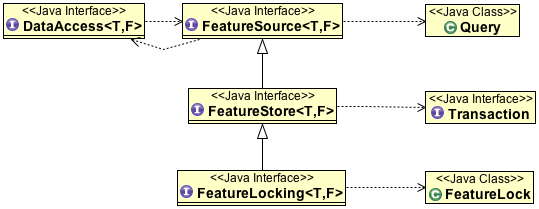

FeatureSource¶
FeatureSource is probably the reason you came to this party; it let’s you access geospatial information as Java objects.
References:
To review a FeatureSource may support the additional interfaces FeatureStore and FeatureLocking if the current user has permission to modify or lock features.
This page explores the capabilities of these classes using code examples.
SimpleFeatureSource¶

To start out with we will focus on SimpleFeatureSource which is used primarily for accessing features.
Access Features¶
You can access all the features using a single method call:
SimpleFeatureSource featureSource = dataStore.getFeatureSource(featureName);
SimpleFeatureCollection collection = featureSource.getFeatures();
This is the same as asking for all the features included in the file or table:
SimpleFeatureSource featureSource = dataStore.getFeatureSource(featureName);
SimpleFeatureCollection collection = featureSource.getFeatures( Filter.INCLUDE );
Feature Access using Filter:
Filter filter = CQL.filter("NAME == 'Hwy 31a');
SimpleFeatureCollection collection = featureSource.getFeatures( filter );
- This is very efficient as Filter can often be boiled down to a raw SQL statement when working with databases
- Any functionality not supported by the back end is handled as part of GeoTools on the client side
You can use Query to request a limited set of attributes; and also request the contents in a specific order.:
FilterFactory ff = ...
Filter filter = ...
String typeName = ...
Query query = new Query(typeName, filter);
query.setMaxFeatures(10);
query.setPropertyNames(new String[]{"the_geom", "name"});
SortBy sortBy = ff.sort("name", SortOrder.ASCENDING);
query.setSortBy(new SortBy[]{sortBy});
SimpleFeatureCollection collection = featureSource.getFeatures( query );
You can use Hints as part of your Query to fine tune performance and functionality; for more information please see the Hints javadocs.:
FilterFactory ff = ...
Filter filter = ...
String typeName = ...
Query query = new Query(typeName, filter);
query.setPropertyNames(new String[]{"the_geom", "name"});
query.setHints( new Hints( Hints.FEATURE_2D, Boolean.true ); // force 2D data
SimpleFeatureCollection collection = featureSource.getFeatures( query );
To quickly request only the FeatureIds (and no content):
SimpleFeatureCollection featureCollection = featureSource.getFeatures( Query.FIDS );
Summary¶
A simple count is available:
SimpleFeatureType schema = featureSource.getSchema();
Query query = new Query( schema.getTypeName(), Filter.INCLUDE );
int count = featureSource.getCount( query );
if( count == -1 ){
// information was not available in the header!
SimpleFeatureCollection collection = featureSource.getFeatures( query );
count = collection.size();
}
System.out.println("There are "+count+" "+schema.getTypeName()+ " features");
The bounding box, or extend, of a set of features:
SimpleFeatureType schema = featureSource.getSchema();
Query query = new Query( schema.getTypeName(), Filter.INCLUDE );
BoundingBox bounds = featureSource.getBounds( query );
if( bounds == null ){
// information was not available in the header
FeatureCollection<SimpleFeatureType, SimpleFeature> collection = featureSource.getFeatures( query );
bounds = collection.getBounds();
}
System.out.println("The features are contained within "+bounds );
Ad-hoc summary information is available using aggregate functions for feature collections:
SimpleFeatureCollection collection = featureSource.getFeatures();
FilterFactory2 ff = CommonFactoryFinder.getFilterFactory2(null);
Function sum = ff.function("Collection_Sum", ff.property("population"));
Object value = sum.evaluate( featureCollection );
System.out.println("total population: "+ sum );
For more information see gt-main collection page.
SimpleFeatureStore¶

FeatureStore is where we finally get access to writing out information to disk, database or web services.
Q: How to tell if you have Read-Write Access?
Use an instance of check:
FeatureSource<SimpleFeatureType, SimpleFeature> source = dataStore.getFeatureSource( typeName ); if( source instanceof SimpleFeatureStore ){ // you have write access SimpleFeatureStore store = (SimpleFeatureStore) source; } else { // read-only }
In the real world people tend to know (or assume) they have write access:
SimpleFeatureStore store = (SimpleFeatureStore) dataStore.getFeatureSource( typeName );
The good news is that this will quickly result in a class cast exception in the event a file is read-only.
Use a Transaction¶
Almost everything goes better with a Transaction! Better in this case is much faster editing for Shapefiles, some data types like WFS only allow you to edit when you have a Transaction.:
Transaction transaction = new Transaction("Example1");
SimpleFeatureStore store = (SimpleFeatureStore) dataStore.getFeatureSource( typeName );
store.setTransaction( transaction );
try {
// perform edits here!
transaction.commit();
}
catch( Exception eek){
transaction.rollback();
}
Adding Data¶
Adding features can be done in the following manner.:
SimpleFeatureStore store = (SimpleFeatureStore) dataStore.getFeatureSource( typeName );
SimpleFeatureType featureType = store.getSchema();
SimpleFeatureBuilder build = new SimpleFeatureBuilder(featureType);
GeometryBuilder geom = new GeometryBuilder();
List<SimpleFeature> list = new ArrayList<SimpleFeature>();
list.add( build.buildFeature("fid1", new Object[]{ geom.point(1,1), "hello" } ) );
list.add( build.buildFeature("fid2", new Object[]{ geom.point(2,3), "martin" } ) );
SimpleFeatureCollection collection = new ListFeatureCollection(featureType, list);
Transaction transaction = new DefaultTransaction("Add Example");
store.setTransaction( transaction );
try {
store.addFeatures( collection );
transaction.commit(); // actually writes out the features in one go
}
catch( Exception eek){
transaction.rollback();
}
Hints:
If addFeatures is really slow you probably forgot to use a Transaction!
Got FeatureCollection?
The addFeatures method really wants a feature collection, if you have something other than a FeatureCollection there are a couple of DataUtilityMethods around to help.
- store.addFeatures( DataUtilities.collection( feature ) );
- store.addFeatures( DataUtilities.collection( array ) );
- store.addFeatures( DataUtilities.collection( list ) );
- store.addFeatures( DataUtilities.collection( set ) );
And by a couple I mean they are all named collection it is just they are willing to adapt from a range of input.
Handling of FeatureID
Each feature has an identifier that is intended to be unique in agreement with the WFS specification. For most implementations the FeatureID is assigned when the feature is added (and even more interestingly when it is committed!):
Transaction transaction = new DefaultTransaction("Add Example"); SimpleFeatureStore store = (SimpleFeatureStore) dataStore.getFeatureSource(typeName); store.setTransaction(transaction); try { List<FeatureId> added = store.addFeatures( collection ); System.out.println( added ); // prints out the temporary feature ids transaction.commit(); System.out.println( added ); // prints out the final feature ids Set<FeatureId> selection = new HashSet<FeatureId>( added ); FilterFactory ff = CommonFactoryFinder.getFilterFactory(); Filter selected = ff.id( selection ); // filter selecting all the features just added } catch( Exception problem){ transaction.rollback(); throw problem; }
FeatureID are assigned during the commit process. While we make an attempt to determine an appropriate ID prior to commit we ask that you wait until commit() is finished before writing down the identifiers of the added content.
The FeatureID instances returned by addFeatures are updated to reflect the final value provided during commit. If you need to perform this step yourself you can listen for a BatchFeatureEvent as shown below.
FeatureEvents are sent out when adding:
Transaction transaction = new DefaultTransaction("Add Example"); SimpleFeatureStore store = (SimpleFeatureStore) dataStore.getFeatureSource(typeName); store.setTransaction(transaction); class CommitListener implements FeatureListener { public void changed(FeatureEvent featureEvent) { if (featureEvent instanceof BatchFeatureEvent ){ BatchFeatureEvent batchEvent = (BatchFeatureEvent) featureEvent; System.out.println( "area changed:" + batchEvent.getBounds() ); System.out.println( "created fids:" + batchEvent.fids ); } else { System.out.println( "bounds:" + featureEvent.getBounds() ); System.out.println( "change:" + featureEvent.filter ); } } } CommitListener listener = new CommitListener(); store.addFeatureListener( listener ); try { List<FeatureId> added = store.addFeatures( collection ); transaction.commit(); } catch( Exception problem){ transaction.rollback(); throw problem; }
The BatchFeatureEvent sent out during commit contains the final set of identifiers
Handling of FeatureID Yourself
Recentlyy a few datastore implementations (JDBCNG and Property) added support for a “Hint” allowing you to define your own FeatureID:
if( featureStore.getQueryCapabilities().isUseExisingFIDSupported() ){ // featureStore allows us to create our own featureIDs SimpleFeatureBuilder b = new SimpleFeatureBuilder(featureStore.getSchema()); DefaultFeatureCollection collection = new DefaultFeatureCollection(null,featureStore.getSchema()); String typeName = b.getFeatureType().getTypeName(); for( FeatureIterator iter=features.features(); iter.hasNext(); ){ SimpleFeature feature = (SimpleFeature) iter.next(); b.init( feature ); // take feature into a builder to modify b.featureUserData(Hints.USE_EXISTING_FID, Boolean.TRUE); feature = b.buildFeature( typeName+"."+System.currentTimeMillis() ); collection.add( feature ); } featureStore.addFeatures(collection); } else { // allow featurestore to create featureIDs featureStore.addFeatures( features ); }
Removing Data¶
The opposite of adding data is removing, in this case we need to use a Filter to select what features are to be removed:
Transaction transaction = new DefaultTransaction("removeExample");
SimpleFeatureStore store = (SimpleFeatureStore) dataStore.getFeatureSource(typeName);
store.setTransaction(transaction);
FilterFactory ff = CommonFactoryFinder.getFilterFactory(GeoTools.getDefaultHints());
Filter filter = ff.id(Collections.singleton(ff.featureId("fred")));
try {
store.removeFeatures(filter);
transaction.commit();
} catch (Exception eek) {
transaction.rollback();
}
This does of course leave an obvious question:
Q What was just removed?
If you would like to report to the user what features were removed you will need to select the FeatureIds out before they are deleted.
Transaction transaction = new DefaultTransaction("removeExample"); SimpleFeatureStore store = (SimpleFeatureStore) dataStore.getFeatureSource(typeName); store.setTransaction(transaction); FilterFactory ff = CommonFactoryFinder.getFilterFactory(GeoTools.getDefaultHints()); Filter filter = ff.id(Collections.singleton(ff.featureId("fred"))); try { final Set<FeatureId> removed = new HashSet<FeatureId>(); SimpleFeatureCollection collection = store.getFeatures( new Query( typeName, filter, Query.NO_NAMES )); collection.accepts( new FeatureVisitor(){ public void visit(Feature feature) { removed.add( feature.getIdentifier() ); } }, null ); store.removeFeatures(filter); transaction.commit(); } catch (Exception eek) { transaction.rollback(); }
Updating Data¶
You can also perform batch changes to the all the data matching a specific filter.:
Transaction transaction = new DefaultTransaction("Example1");
SimpleFeatureStore store = (SimpleFeatureStore) dataStore.getFeatureSource( typeName );
store.setTransaction( transaction );
FilterFactory ff = CommonFactoryFinder.getFilterFactory( GeoTools.getDefaultHints() );
Filter filter = ff.id( Collections.singleton( ff.featureId("fred")));
SimpleFeatureType featureType = store.getSchema();
try {
store.modifyFeatures( "age", new Integer(24), filter );
transaction.commit();
}
catch( Exception eek){
transaction.rollback();
}
The above code example finds the feature with ID “fred” and changes his “age” to 24.
SimpleFeatureLocking¶
FeatureLocking follows the same model as web feature service locking; a time based lock is requested. The lock is valid until released, or until the duration expires.

Acquiring a lock is straight forward:
FeatureLock lock = new FeatureLock("test", 3600);
SimpleFeatureLocking road = (SimpleFeatureLocking) data.getFeatureSource("road");
road.setFeatureLock(lock);
road.lockFeatures( filter );
System.out.println("Features lock with authorisation: "+lock.getAuthorization() );
To unlock the features again we need to use the authorisation provided by lock.getAuthroisation() above. Usually these authorisations are stored as part of your application (as part of a session), and used to configure the GeoTools Transaction before use of SimpleFeatureStore.:
Transaction t = new DefaultTransaction();
// authorisation provided by previous lockFeatures operation
road.setTransaction("A123h123sdf2");
road.modifyFeatures( filter, .... )
road.unLockFeatures( filter );